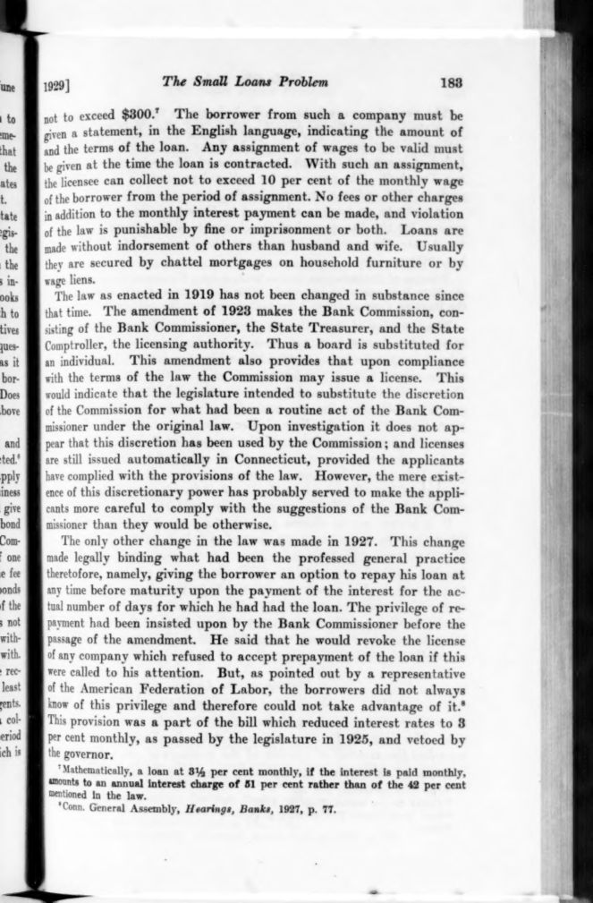

Bigham, 1929: o balanço fiscal do imposto de renda estadual desde 1918
Leitura: 9 min
Bigham mede o rendimento do imposto de renda em quatorze estados americanos de 1918 a 1927 e conclui que, bem desenhado e bem administrado, ele passou a superar o imposto geral sobre a propriedade.


Em 1918, o imposto de renda dos quatorze estados americanos que o cobravam produzia menos da metade do que rendia o velho imposto geral sobre a propriedade. Em 1927, rendia mais de uma vez e meia. A virada é o centro do artigo de Truman C. Bigham, da University of Arkansas, que atualiza dois estudos publicados na própria American Economic Review em 1920, de Alzada Comstock e H. L. Lutz, e avalia os resultados do ponto de vista fiscal.
Em 1918, nove estados tinham leis de imposto de renda individual, de empresas ou ambos; quando o artigo foi escrito, eram dezesseis: Arkansas, Califórnia, Connecticut, Delaware, Massachusetts, Mississippi, Missouri, Montana, New Hampshire, Nova York, Carolina do Norte, Dakota do Norte, Oklahoma, Carolina do Sul, Virgínia e Wisconsin. Outros quatro tiveram o imposto e o perderam: a Suprema Corte do Alabama o declarou inconstitucional em 1920, o Novo México o revogou, a Pensilvânia o usou como medida de emergência e o Oregon o derrubou em votação popular em 1924.
Como medir o desempenho de um imposto estadual?
O autor compara a receita estadual com a do imposto de renda federal arrecadado no mesmo estado, com o total de impostos estaduais e com a receita do imposto geral sobre a propriedade, e examina os custos de administração. Adverte que os dados vêm de fontes diversas, nem sempre comparáveis, e que foi preciso recorrer muitas vezes ao “processo trabalhoso e incerto” de escrever cartas às autoridades. Arkansas e Califórnia ficam de fora por terem leis muito recentes.
Para o conjunto dos estados, a receita do imposto de renda estadual subiu de pouco mais de 15 por cento para quase 20 por cento da arrecadação federal correspondente. Bigham não vê nisso maior eficiência, mas uma fatia maior do total, e pergunta até onde os estados podem ir sem prejudicar a produtividade da lei federal. O imposto estadual parece menos elástico que o federal, provavelmente porque alcança rendas menores e depende menos dos lucros das empresas.
O dado mais marcante é a relação com os impostos estaduais totais e com o imposto sobre a propriedade. O imposto de renda passou de um oitavo da receita tributária estadual em 1918 a bem mais de um quinto em 1927; em alguns estados é a maior fonte isolada, em outros só perde para os impostos sobre gasolina e automóveis. Para o autor, já não se pode dizer que o imposto geral sobre a propriedade é o pilar fiscal desses estados. O custo médio de administração caiu de 2,5 por cento da arrecadação para 2,08 por cento nos estados com dados.
Quem teve sucesso?
Bigham passa estado por estado. Connecticut tributa só a renda líquida das empresas não taxadas de outra forma, com alíquota elevada de 2 para 3 por cento, e obteve receita média anual de 2.275.000 dólares; o estado mostra, diz o autor, que num estado industrial uma boa lei limitada às empresas produz receita considerável. Delaware saltou de 666.000 para 1.085.000 dólares em 1925, depois de tributar a renda agrícola, adotar alíquotas graduadas e passar a administração a um comissário com poder de auditar declarações.
Massachusetts manteve posição alta, com quase 15 milhões de dólares em 1918 e mais de 20 milhões em 1927, embora seu imposto nunca tenha sido geral; o sucesso é atribuído à administração centralizada e especializada, e as auditorias de 1927 renderam mais de 619.000 dólares, mais que todo o custo de administração. Nova York, graças ao volume de renda gerado em seu território, arrecadou em 1927 pela primeira vez mais de 100 milhões de dólares, sete vezes o valor de 1918; 57 milhões ficaram com o estado e 43 milhões foram para as localidades. O custo de coleta caiu de 2,69 para 1,89 por cento.
O caso que mais impressiona o autor é o Mississippi. Em 1918, seu imposto rendia menos de 52.000 dólares, 1 por cento dos impostos estaduais; nunca passara de 89.000 até 1924. A nova lei daquele ano, próxima da federal, com isenções de 1.000 e 2.000 dólares e alíquotas de 1 a 5 por cento, administrada pelo presidente da comissão tributária a menos de 2,5 por cento de custo, elevou a receita a 820.000 dólares no ano seguinte e a 1.864.000 em 1927. O Mississippi, predominantemente agrícola, era tido como um dos estados atrasados em finanças públicas.
A Carolina do Norte, que desde 1921 não cobrava imposto sobre a propriedade para fins estaduais, passou de pouco mais de 2 milhões de dólares em 1922 para mais de 6 milhões em 1927, a um custo de cerca de 1 por cento. A Carolina do Sul, também agrícola, arrecadava em 1927 mais de 83 por cento do valor federal. O Wisconsin, pioneiro, subiu de pouco mais de 6 milhões em 1918 para quase 19 milhões em 1927, a 1,3 por cento de custo; nenhum estado obtém do imposto de renda parcela tão grande de sua receita.
Onde o imposto falhou?
Oklahoma é, para Bigham, o único fracasso quase completo: arrecadava menos no fim do período que no início, menos de 400.000 dólares por ano, enquanto o governo federal coletava ali mais de 8 milhões em imposto pessoal. A lei não alcançava empresas, as alíquotas eram brandas, as isenções altas, e só 21.500 pessoas apresentaram declaração em 1927. Missouri, com a terceira maior base tributável dos quatorze, rendeu 4 milhões em 1927 com alíquota baixa, sem graduação e com administração local; quando a alíquota subiu para 1,5 por cento em 1919, a receita passou de 485.000 para 3.278.000 dólares, mas a taxa foi depois reduzida.
Montana, com lei limitada a certas empresas e alíquota fixa de 1 por cento, arrecadou só 245.000 dólares em 1927. New Hampshire tributa apenas rendas de bens intangíveis. A Dakota do Norte começou com uma lei complicada que distinguia renda ganha e não ganha e chegava a 10 por cento sobre rendas não ganhas acima de 30.000 dólares; foi depois refeita segundo a lei-modelo da National Tax Association. A Carolina do Sul tentou em 1922 cobrar um terço do imposto federal devido, mas o sigilo da lei federal impedia saber quando havia cobranças adicionais, e a lei foi trocada em 1926.
Que inovações o Wisconsin trouxe?
O autor destaca duas mudanças da lei de 1927. A isenção passou a ser um abatimento do imposto, de 8 dólares para solteiros e 17,50 para casados, e não uma dedução da renda; na regra antiga, um solteiro com 1.000 dólares de renda líquida tinha redução de 8 dólares no imposto e um com 12.000, redução de 45, o que tornava as isenções progressivas. E a renda passou a ser avaliada pela média de três anos, o que tende a tornar o imposto menos elástico mas evita que ganhos acumulados em vários anos joguem o contribuinte nas faixas altas.
Quais as conclusões?
Bigham resume em cinco pontos. O imposto de renda estadual provou seu sucesso: rende um quinto do federal, quase um quarto dos impostos estaduais e uma vez e meia o imposto sobre a propriedade, a um custo médio de 2 por cento. Sua importância cresceu muito desde 1918. É um sucesso fiscal razoável em todos os estados estudados, salvo Oklahoma e talvez Missouri, e Mississippi e Carolina do Sul mostram que uma lei bem feita sustenta boa parte da receita num estado agrícola. As alíquotas subiram e a administração melhorou, e a auditoria cuidadosa dá bons resultados onde é tentada.
Por fim, a lei deve ser adaptada às condições econômicas do estado: base ampla, isenções relativamente baixas, alíquotas progressivas de cerca de 1 a 6 por cento, definição de renda próxima da federal, nenhum crédito contra o imposto e, acima de tudo, administração centralizada e especializada. As recomendações da National Tax Association, conclui o autor, ficam amplamente confirmadas.
“Um instrumento que hoje rende aos estados ... uma vez e meia a arrecadação do imposto geral sobre a propriedade, a um custo médio de 2 por cento, é um mecanismo fiscal satisfatório.” (and to one and one-half times the collections from the general property tax, at an average cost of 2 per cent, is a satisfactory fiscal device.)
Na minha leitura
Na minha leitura, o artigo é um exercício de finanças públicas comparadas com o instrumental da época: tabelas montadas a partir de relatórios oficiais e cartas, e um critério essencialmente fiscal, quanto cada lei rende e a que custo. A conclusão de Bigham coincide com a agenda da National Tax Association, que defendia o imposto de renda estadual como substituto do imposto geral sobre a propriedade, cuja crise o autor documenta.
O estudo ganha relevo pelo momento: em 1929, vários estados discutiam adotar o imposto, e a década seguinte, com a queda dos valores imobiliários na Depressão, aceleraria essa troca. Bigham insiste menos na teoria do imposto e mais nos detalhes de desenho e administração, alíquotas, isenções, auditoria, que explicariam por que leis parecidas renderam tão diferente.
Glossário
- Imposto geral sobre a propriedade
- tributo estadual e local americano sobre o valor de todos os bens, imóveis e móveis, base tradicional das finanças dos estados.
- Elasticidade da receita
- sensibilidade da arrecadação às variações da renda e da atividade econômica.
- Bens intangíveis
- ativos sem existência física, como ações, títulos e créditos, difíceis de alcançar pelo imposto sobre a propriedade.
- Abatimento do imposto
- redução aplicada diretamente ao valor devido, em vez de dedução da renda tributável.
- National Tax Association
- associação americana de especialistas e administradores tributários, que elaborou uma lei-modelo de imposto de renda estadual.
Fontes
- Fiscal Aspects of the State Income Tax since 1918 — Truman C. Bigham (University of Arkansas) (pp. 227–245). Internet Archive (número completo, PDF)
- Edição completa, com os demais artigos: Nº 213 do Arquivo.
Documento em domínio público (EUA, publicado antes de 1931), via JSTOR Early Journal Content e Internet Archive. Resumo e comentário do autor deste site, sem afiliação com a American Economic Association. Encontrou um erro? Escreva: a correção é publicada no próprio texto, com data.
← Hewett, 1929: poupança é renda? Uma resposta a Irving Fisher ↑ Nº 213 · Fisher e os pequenos empréstimos, Bachmann e o ouro suíço, Smith e a Bolsa de Londres, Bigham e o imposto de renda dos estados Ezekiel, 1929: o que dizem os coeficientes de correlação →